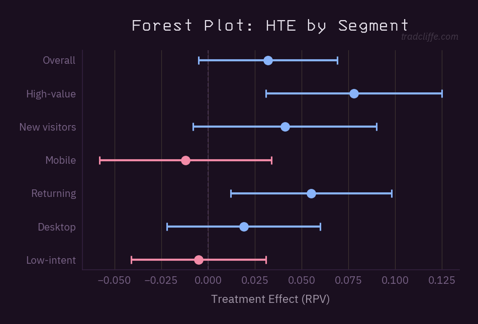
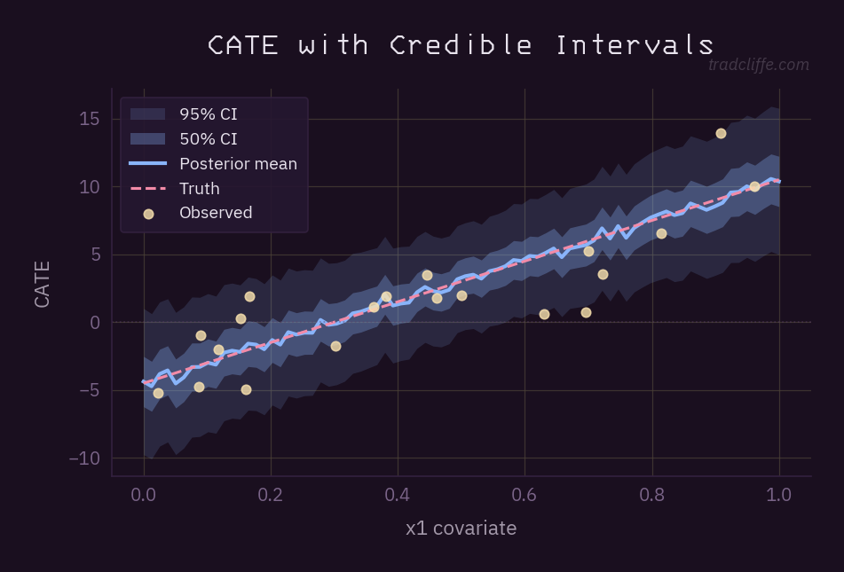
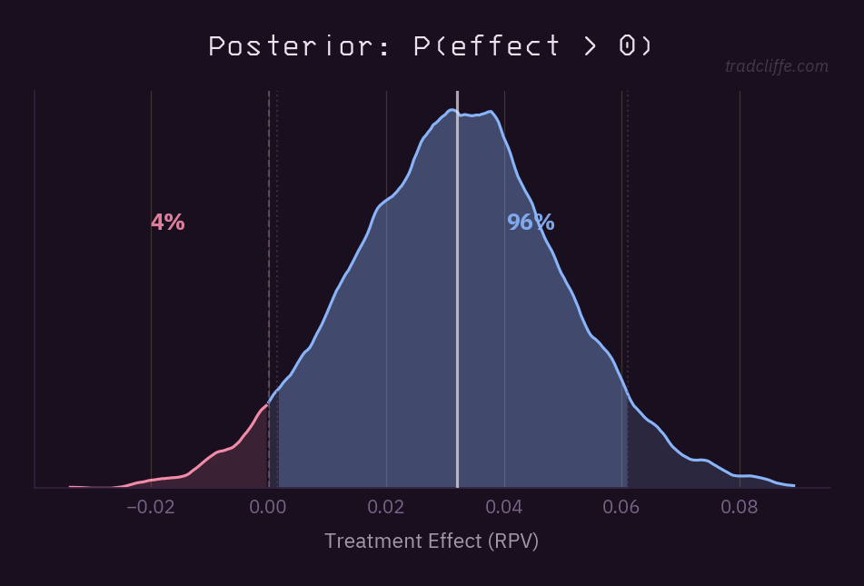
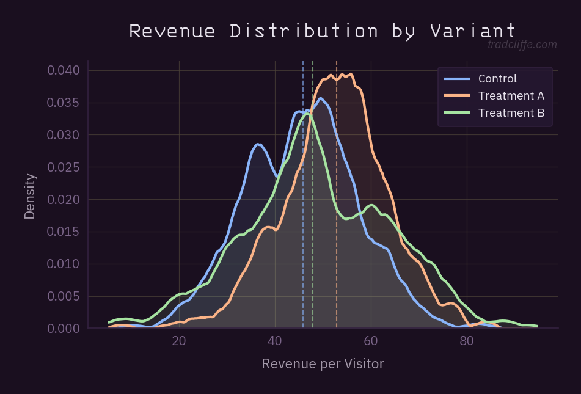
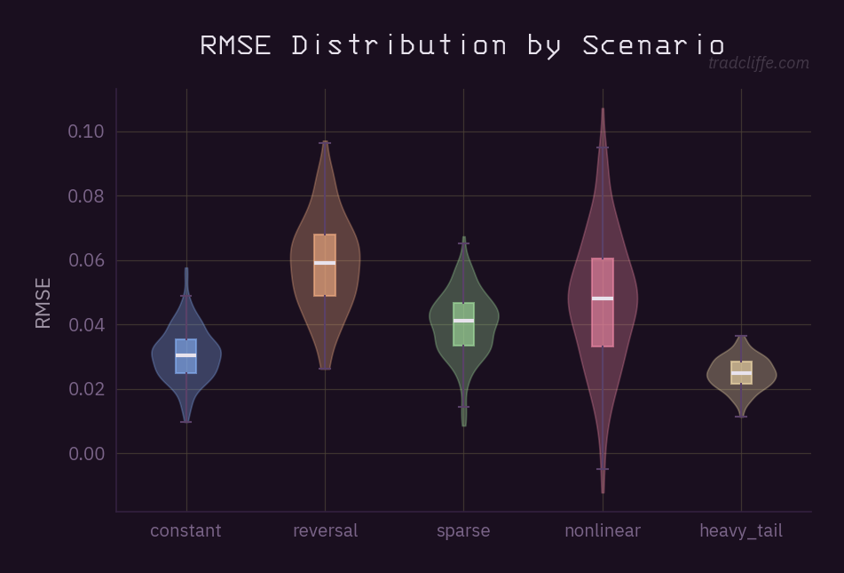
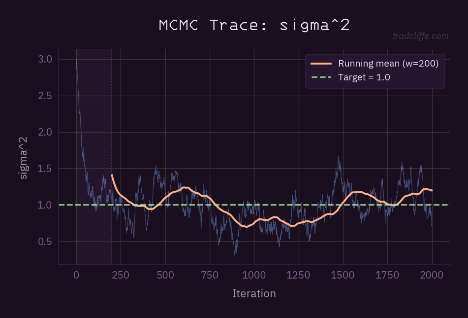
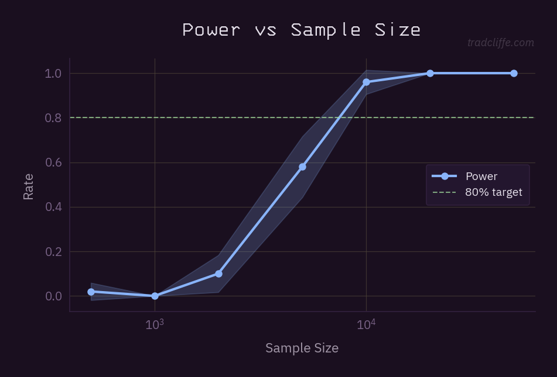
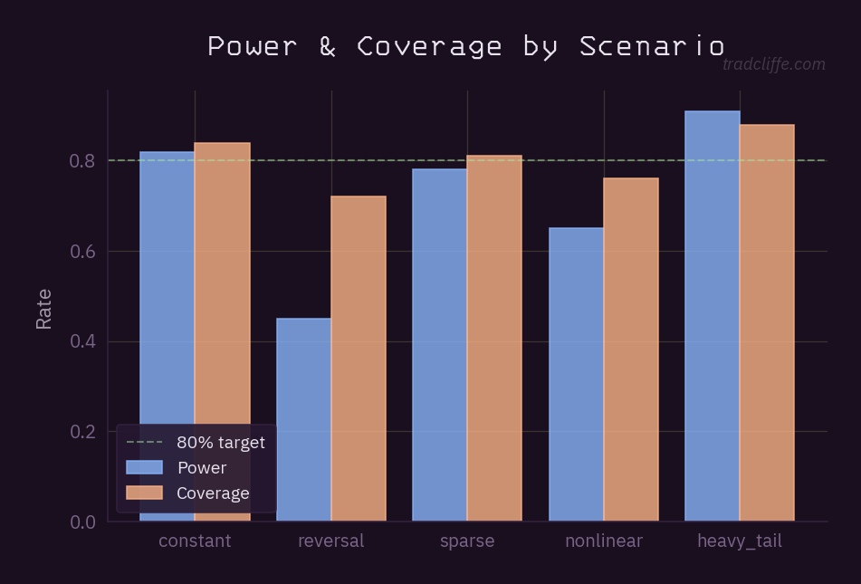
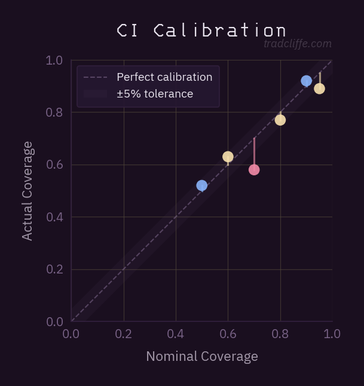

Matplotlib + D3 chart library. Purple chrome with Catppuccin Mocha accents.
Bayesian posterior visualizations with drag-to-adjust CI bounds, threshold lines, and plain-English tooltips.
Multi-variant ridge comparison with draggable threshold line, CI bounds, dual $/% axes, inline statistics. Drag the dashed threshold line to re-split.
HTE segment estimates with capped CIs. Hover for details, click to highlight a row. Green = positive, red = negative.
Posterior mean with layered 50%/95% credible bands. Hover crosshair shows interpolated values. Green dashed = truth.
Overlaid KDE densities with median lines. Click legend swatches to toggle series. Hover for multi-series comparison.
20-dot quantile dotplot with KDE violin overlay, threshold-split coloring
9 opinionated chart helpers — labeled axes, semantic colors, credible intervals, capped error bars. uv run python examples/showcase.py
HTE estimates with capped CIs, blue=positive / red=negative

Posterior mean with layered 50%/95% credible bands

KDE with threshold shading and credible interval

Overlaid KDEs with median lines for multi-variant comparison

Violin+box distribution comparison across scenarios

MCMC trace with burn-in shading, target line, running mean

Power vs sample size with CI ribbon and target line

Grouped bar with automatic width and target line

CI calibration — nominal vs actual coverage

Purple chrome surfaces derived from tradcliffe.com. Data accents from Catppuccin Mocha.
uv add trad-charts --git https://github.com/trrad/trad-charts
from trad_charts import apply_theme, get_palette, watermark, TITLE_FONT
apply_theme()
pal = get_palette()
fig, ax = plt.subplots()
ax.plot(x, y, color=pal.blue)
ax.set_title("My Chart", **TITLE_FONT)
watermark(fig)
import { RidgeDotplot } from 'trad-charts-d3';
const ridge = RidgeDotplot()
.width(800)
.numDots(20)
.showViolin(true);
d3.select('#container')
.datum({ variants, threshold: 0.10 })
.call(ridge);